Tipo de orden en ticket y comanda + orden arriba en celular
Versión de prueba con la cuenta demo (Taquería Don Chuy). Todavía NO está en donpunto.com: se publica cuando digas «súbelo».
Qué cambia
- Tienda: antes de cobrar o guardar hay que elegir COMER AQUÍ o PARA LLEVAR. Si es comer aquí, sale el campo Mesa # (opcional).
- DiDi: el número de pedido es obligatorio (ej. 12 → sale «DIDI #12»).
- Uber y Rappi: el nombre del cliente es obligatorio (sale «UBER · JUAN PÉREZ»).
- Va en grande arriba del ticket y de la comanda de cocina, también al reimprimir y por la impresora Bluetooth.
- Se guarda en la venta: en Tickets sale la etiqueta y puedes buscar «#12», «mesa 4» o «para llevar». Las cuentas abiertas también la guardan, y al reanudarlas regresa lo que se eligió.
- Los pedidos en línea se marcan solos: «EN LÍNEA · PARA RECOGER / A DOMICILIO».
- La descarga de reportes (Pro) trae la columna nueva «Tipo de orden». El corte de caja no cambia.
- Celular y tablet: la Orden Actual va arriba de los productos (debajo de Tienda/Uber/DiDi/Rappi). Si bajas a ver productos, sale el botón verde «Ver orden (3) · $89» que te regresa a la orden. En computadora queda igual.
1. Tickets y comandas (como salen impresos, 58 mm)
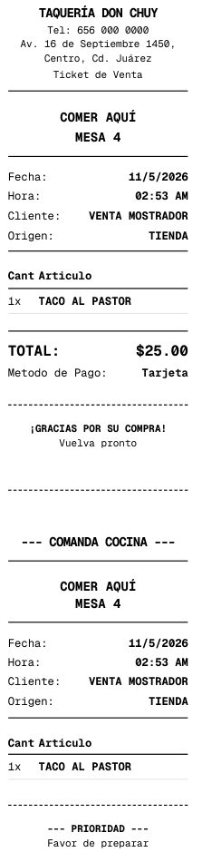
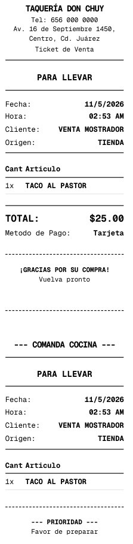
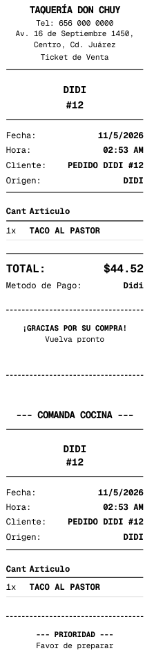
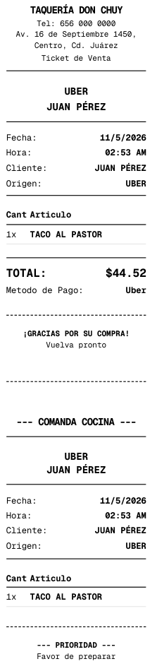
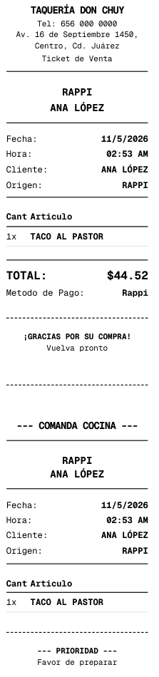
2. Celular y tablet: la orden arriba
Celular (página completa)
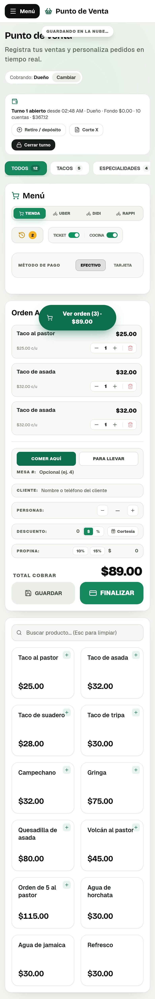
Tablet (página completa)
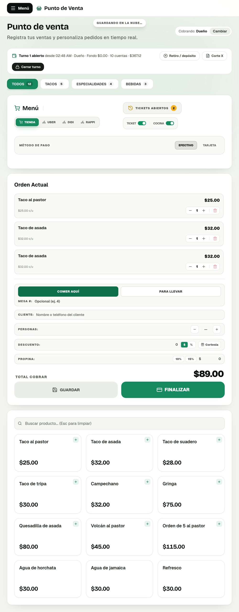
Celular: abajo en los productos aparece «Ver orden»
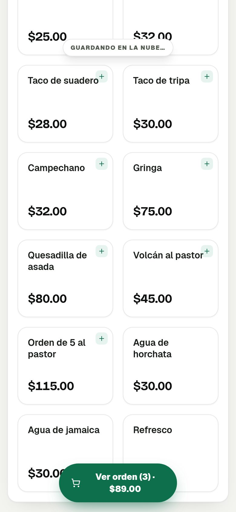
3. Computadora (queda igual, con los botones nuevos)
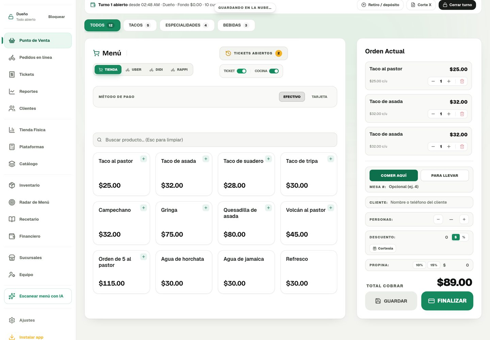
Si no eligen el tipo de orden, no deja FINALIZAR y dice qué falta
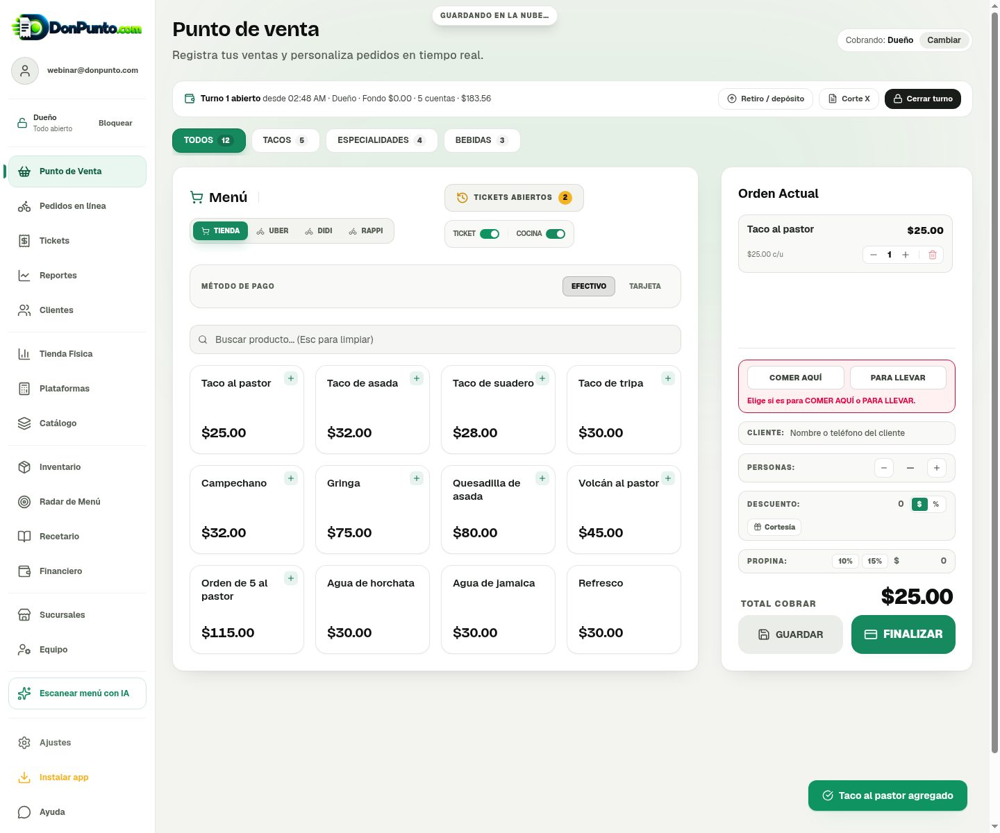
4. Cuentas abiertas y búsqueda
Cuenta guardada «COMER AQUÍ · MESA 7»
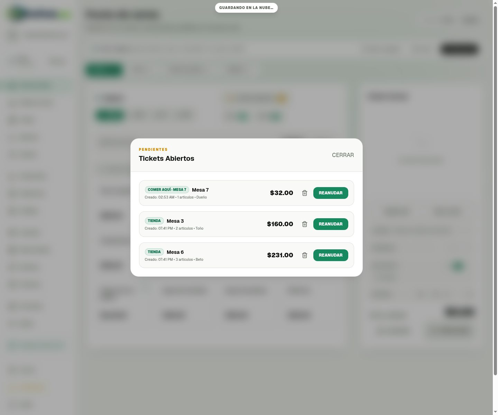
Tickets: buscar «#12» encuentra el pedido de DiDi
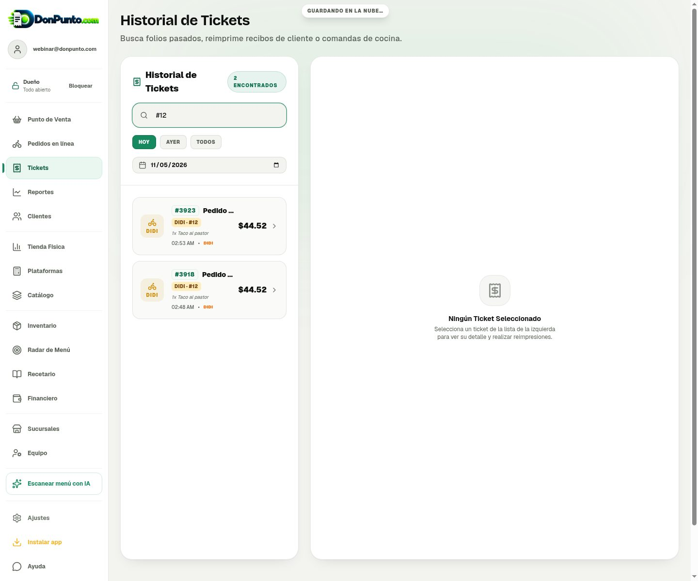
Pruebas que pasaron
- Sin elegir el tipo de orden → avisa y no cobra (en Tienda, DiDi, Uber y Rappi)
- Los 5 tipos salen en el ticket y en la comanda
- Cuenta abierta mesa 7 → guardada → reanudada con «Comer aquí» y mesa 7
- Búsqueda «#12» en Tickets
- Sin desbordes a lo ancho en celular (390 px), tablet (820 px) ni compu (1440 px)
Pendiente después de publicar: que lo pruebes en tu celular con tu impresora.